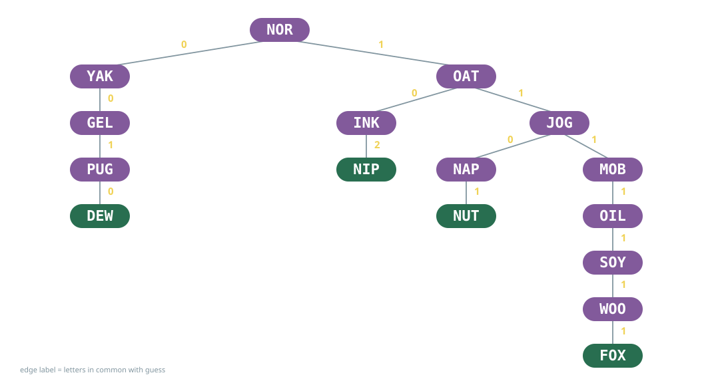
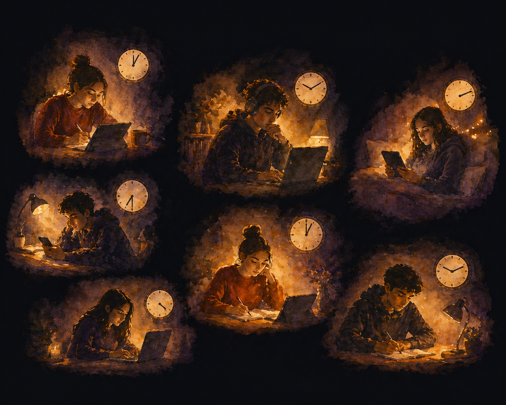

WiDS AlumNight 2026
MOB YAK GEL NIP OAT PUG FOX NOR WOO INK SOY JOG NUT DEW NAP OIL
Pick one. Make sure everyone knows and agrees.


194 students · randomized crossover · AI tutor at home vs. active-learning class
2×
learning gains
49
minutes, vs. 60 in class
↑
engagement & motivation
Kestin et al. (2025), Scientific Reports 15:17458
Learning is communication.
Vygotsky (1978) · Sfard (2008) · Chi et al. (1994) · Chi & Wylie (2014)
Find a rule that applies to everyone’s set of numbers.
How do the numbers relate to the graph on the flip side?
In any connected planar graph,
\[V - E + F = 2\]
where V is the number of vertices, E the number of edges, and F the number of faces.
The critical information was spread out among you.
Transactive memory: Wegner (1987)
A machine gives the answer.
People give responses.
| Red | Green | Blue | |
|---|---|---|---|
| 255 | 0 | 0 | |
| 17 | 0 | 178 | |
| 45 | 0 | 13 | |
| 200 | 0 | 220 | |
| 62 | 0 | 37 | |
| 130 | 0 | 95 |
Leave out a dimension,
and you can’t see what’s missing.
A group’s intelligence isn’t predicted by its smartest member.
It’s predicted by how well its members listen to each other.
Woolley, Chabris, Pentland, Hashmi & Malone (2010), Science
Jotto
Negotiation & collaboration
You agreed on one word, with no leader.
Euler’s cards
Distributed data
Nobody could find the rule from one card.
The colour cube
Diversity
Leave out a dimension and you can’t see what’s missing.
Each of these stories is different if the concept is learned in isolation.
Was the hardest part of your job last month technical?
Or was it…
figuring out the question someone was really asking? telling someone their data can’t answer it? getting people to agree on what a column means?
Every workplace is a group project.
Expertise isn’t having the answer.
It’s knowing how to nurture and elicit all the ideas, from every person.
Chi, M. T. H., de Leeuw, N., Chiu, M.-H., & LaVancher, C. (1994). Eliciting self-explanations improves understanding. Cognitive Science, 18(3), 439–477.
Chi, M. T. H., & Wylie, R. (2014). The ICAP framework: Linking cognitive engagement to active learning outcomes. Educational Psychologist, 49(4), 219–243.
Kestin, G., Miller, K., Klales, A., Milbourne, T., & Ponti, G. (2025). AI tutoring outperforms in-class active learning: an RCT introducing a novel research-based design in an authentic educational setting. Scientific Reports, 15, 17458.
Lave, J., & Wenger, E. (1991). Situated Learning: Legitimate Peripheral Participation. Cambridge University Press.
Sfard, A. (2008). Thinking as Communicating: Human Development, the Growth of Discourses, and Mathematizing. Cambridge University Press.
Vygotsky, L. S. (1978). Mind in Society: The Development of Higher Psychological Processes. Harvard University Press.
Wegner, D. M. (1987). Transactive memory: A contemporary analysis of the group mind. In B. Mullen & G. R. Goethals (Eds.), Theories of Group Behavior (pp. 185–208). Springer.
Woolley, A. W., Chabris, C. F., Pentland, A., Hashmi, N., & Malone, T. W. (2010). Evidence for a collective intelligence factor in the performance of human groups. Science, 330(6004), 686–688.